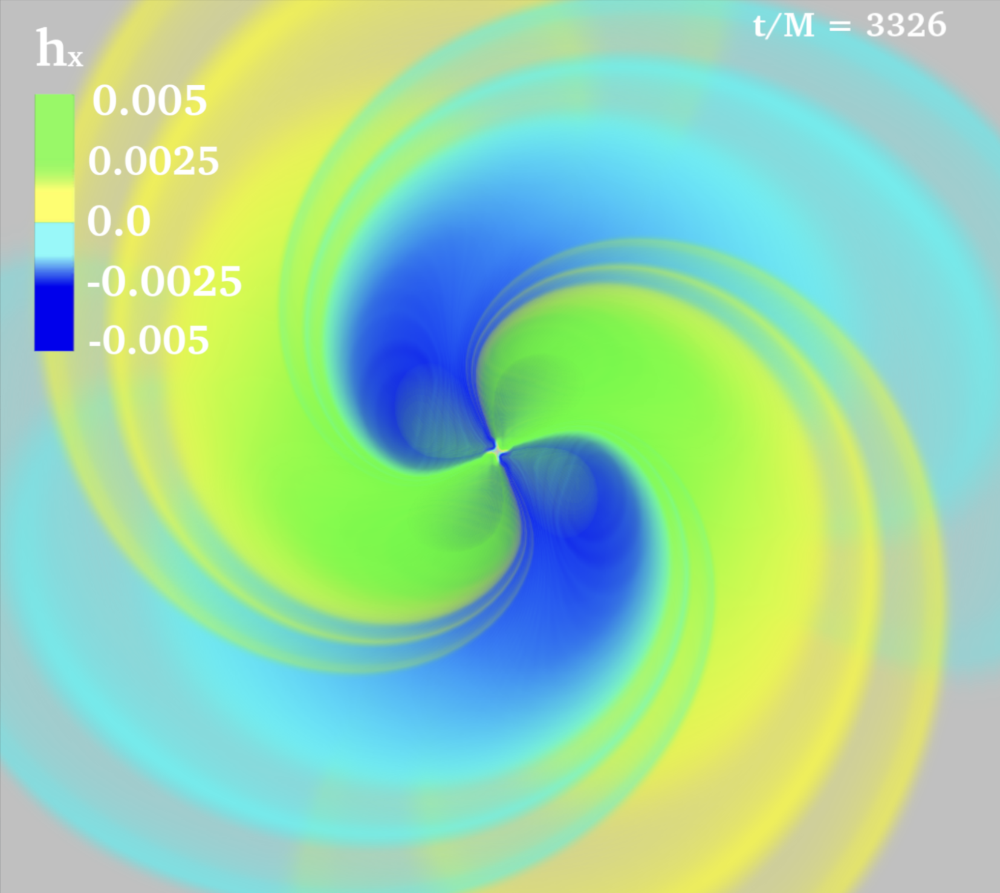
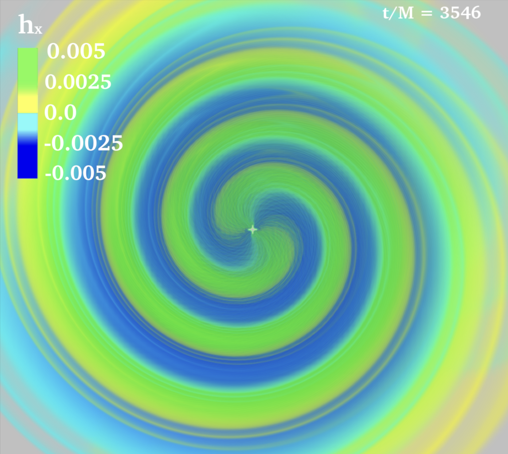
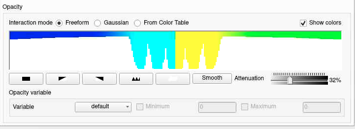
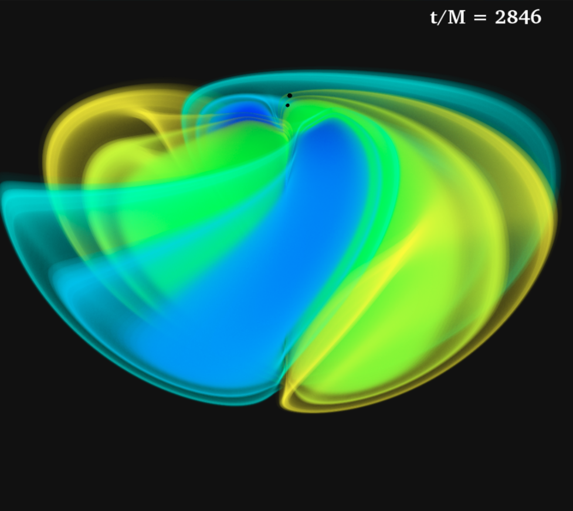
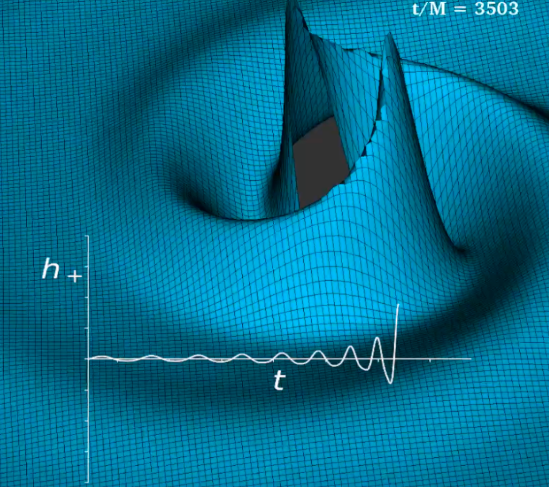
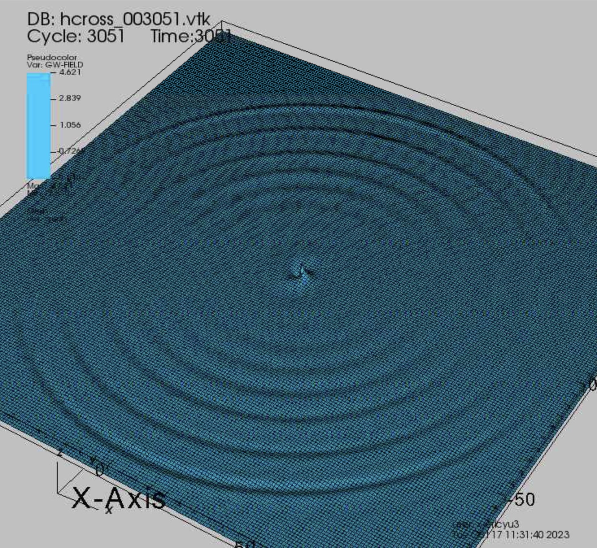

Visualizing Gravitational Waves
In this section we will discuss how to visualize gravitational waves using numerical relativity simulation data. Gravitational wave movies can provide helpful intuition about the systems being simulated. When they are examined in conjunction with movies of the sources that produce them, broad insights related to gravitational wave emission can be deduced. These visualizations will use the following simulation output database:
- Psi4_rad.mon.#: ASCII files containing the Newman-Penrose scalar decomposed into s = −2 spin-weighted spherical harmonics ψ4lm. There are multiple files with # = 1,2,...,9 that correspond to different extraction radii rareal.
These files have columns
t ∥ Re(ψ422) ∥ Im(ψ422) ∥ Re(ψ421) ∥ Im(ψ421) ∥ · · · ∥ Im(ψ4last mode) ∥ rareal ∥ ⟨gtt⟩ ∥ ⟨gtr⟩ ∥ ⟨grr⟩
The last three columns are averages of metric components. The fourth from the last column is the extraction radius rareal. This value is relatively constant across a single file and is far enough from the origin (where the compact objects are located) so that we are in the radiation zone. Multiple files #=1,2,...,9 that correspond to different rareal are output so that we can confirm that the gravitational wave amplitude falls of like r −1 and otherwise does not depend on the extraction radius. The first column is the simulation time t. The rest of the columns are the real and imaginary components of ψ4 decomposed into ψ4lm, which are the s = −2 spin-weighted spherical harmonics -2Y lm (θ, ϕ) [1].
$$ \psi_4(t, \theta, \phi) = \sum_{l=2}^{\infty} \sum_{m=-l}^{l} \psi_4^{lm}(t) \; {}^{-2}Y_{lm}(\theta, \phi) $$
For example: columns 2, 3 are modes (l, m) = (2, 2); columns 4, 5 are modes (l, m) = (2, 1); columns 6, 7 are modes (l, m) = (2, 0) (note that we count down from m = l to m = −l). Continuing this pattern, and noting that there are five l = 2 modes, seven l = 3 modes, etc., we know that
- Columns 2 through 11 are the l = 2 modes
- Columns 12 through 25 are the l = 3 modes
- Columns 26 through 43 are the l = 4 modes
and so on. In the Illinois GRMHD code, for binary black hole simulations, we output the first thirty modes. This means that there are 2 ∗ 30 + 5 = 65 columns in the Psi4 rad.mon.# file (real and imaginary column for each mode plus the five additional columns). In this case, the last mode output would be (l, m) = (5, −3).
This file gives one-dimensional data of the ψ4 scalar as a function of time t that is extracted at a radius rareal from the origin. In order to turn this into 3D data of the gravitational wave strain h(t, r, θ, ϕ) that we can visualize and turn into a movie, a considerable amount of post-processing must be done. The ‘plus’ and ‘cross’ polarizations of the strain h are related to ψ4 by
ψ4 = h¨+ − ih¨×
Thus in order to get the strain, we must perform a double time integration on ψ4lm(t). Following the method described in [5], we perform this double-time integration by dividing by ω2in Fourier space. For frequencies close to zero, the calculation of the singular integral becomes inaccurate, therefore a cutoff frequency ω0 is introduced [5]. We set ω0 equal or less than the initial orbital angular velocity of the system (for the most dominant (2, 2) mode). Implementation-wise, the Fourier transforms are done with a standard Fast Fourier Transform with padding added to each end of the time-domain signal. After this double-time integration, we will have the values Clm as a function of time:
$$ C_{lm}(t) = \int_{-\infty}^{t} dt' \int_{-\infty}^{t'} dt'' \, \psi_4^{lm}(t'') $$
At this step, we have an array of the Clm(t) that is a function of time. We already have the angular dependence from the spherical harmonics -2Ylm (θ, ϕ). In order to obtain the radial dependence, we will have to consider how the amplitude of h falls as 1/r, as well as the time retardation t = t(r) due to the time it takes the signal to reach the observer at the radiation zone (at position rareal).
To add the time retardation, we consider howClm(r) should look like at a fixed time t = t0. We define a retarded time:
$$ t_0(r) = \begin{cases} t_0 - r & \text{if } t_0 \ge r \\ 0 & \text{if } t_0 < r \end{cases} $$
Note that in units of c = 1, the speed of gravitational waves is one. Therefore at a radius r, we want to use the data “from the past” at time t0(r) = t0 − r. If our fixed time, t0, is relatively early in the simulation so that t0 < r, then it would have been impossible for a wave to propagate from the origin to that radius r. In that case we set t0(r) equal to the first simulation time t = 0. Since there might be numerical errors that cause Clm(t = 0) to be nonzero everywhere, we manually set Clm(t = 0) = 0. Then we can add this time retardation, along with the 1/r dependence to get radial dependence at a fixed time t0 using
$$ C_{lm}(t_0, r) = \frac{1}{r} \, C_{lm}(t_0(r)) $$
Then we can get the 3D data of the gravitational wave strain at a fixed time t0 using
$$ \frac{1}{2} \left( h_+(t_0, r, \theta, \phi) - i h_\times(t_0, r, \theta, \phi) \right) = \frac{1}{r} \sum_{l=2}^{\infty} \sum_{m=-l}^{l} C_{lm}(t_0(r)) \, {}^{-2}Y_{lm}(\theta, \phi) $$
The individual polarization h+ (h×) can be obtained by taking the real (imaginary) part of this expression. Using the method described above, we are able to create a 3D data file that contains the gravitational scalar field h+ or h× for every time from our original Psi4 rad.mon.# file. In the following sections, we will discuss some nuances about the implementation as well as the specifics about how to generate data files that can be visualized in VisIt using two different rendering techniques.
Post-Processing Implementation
The first thing we must do is choose the grid parameters of the 3D data that we will generate. A choice that we make in the Illinois Relativity Group is to visualize the strain only in the lower half z < 0 space. Since the orbital angular momentum in our binary simulations points in the zˆ direction, plotting the strain in z < 0, gives a cross-section on the xy-plane as viewed from above (i.e. a bird’s eye view from a point on the positive z axis). We choose a grid where the xy slices are squares of length 2L. Since we only want to plot z < 0, we use a grid such that (x, y, z) ∈ [−L, L] × [−L, L] × [0, L]. We want to pick L large enough such that we can observe the outward propagation of the waves. For the images above, we used L = 75 (remembering that c = 1). Additionally, we will need to choose the number of grid points in the x, y, z directions, which we will denote by nx, ny, nz. We’ve found that having a grid spacing of 1 in code units is enough to produce good visualizations. For now on, we will adopt the notation i, j, k when refering to the x, y, z indices of our grid. Assuming L = 75 with (nx, ny) = (150, 150) and nz = 75, then (i, j, k) = 0, 0, 0 would correspond to (x, y, z) = (−75, −75, −75) and (i, j, k) = (149, 149, 74) would correspond to (x, y, z) = (75, 75, 0).
After we’ve chosen our grid, we create lookup tables that give us the values of -2Ylm(θ, ϕ) = -2Ylm(x, y, z) and r = r(x, y, z) at each grid point since these values will be used at each time step and can be rather expensive to compute (especially the -2Ylm). The lookup tables for -2Ylm will be arrays of shape [n x,n y,n z,n modes] ([n x,n y,n z]) that we can access as Ylm[i,j,k,m] (r[i,j,k]). Here n x, n y, n z are nx, ny, nz and n modes is the number of lm-modes that were in the output Psi4 rad.mon.# files (i.e. n_modes is P N l=1 P l m=−l 1 = N(N + 2) where the sum is cutoff at l = N while theoretically it should extend to ∞).
Then we can start calculating h+ and h×. The lm(t) that we obtain by double time integrating ψ4lm(t) is a function of time and the lm-modes. It can be loaded into an array of the shape [n times, n modes] that we can access as Clm[t,m]. Here n times is the number of iteration times (i.e. the number of rows) in our output Psi4 rad.mon.# file. In order to apply Eq. 5 to this array, we need to express Eq. 4 in terms of indices. To do this, we need the time step dt between times. Then we can use
rt = ((t - (r / dt)).astype(int)).clip(min=0)
to implement Eq. 5. This example is in Python, and r is the lookup table NumPy array for r and t is the index for the time. This way, t and r/dt both have “index” dimensions. It is then cast as an integer and all negative values are set to zero so that rt is an array of indices (that we can access as rt[i,j,k]). Then NumPy allows us to simply do
Clm_ijk = Clm[rt,:]
to implement Eq. 5 and create an array Clm ijk of shape [n x,n y,n z,n modes]. This is now the same shape as the lookup table Ylm so now Eq. 6 can be implemented by summing over the lm-modes and dividing by the r lookup table
hplus_hcross = 2*(1/r)*np.einsum('ijkm->ijk', Clm_ijk*Ylm)
where we have used NumPy’s einsum method to sum over the modes. Then h+ and h× can be obtained by taking the real and imaginary parts of the hplus hcross array of complex numbers. Moving forward, we refer to either h+ or h× as simply h (or h).
At a fixed time t*dt (remember that t is an index), we have obtained an array h=h[i,j,k]. The last remaining step before we discuss visualization is how to store the data contained in this array in a format that is usable by VisIt. We will use .vtk files to store this scalar data. The first thing we have to do is setup the header of the .vtk file. We will use the option DATASET STRUCTURED POINTS since we have a predefined grid with fixed spacing. The DIMENSIONS field is n x, n y, n z (150, 150, 75 with the grid we’ve been using). The ORIGIN field is the minimum value of the x, y, z coordinates which is −L for all three (with our choice of L it is -75 -75 -75). The SPACING field is spacing between grid points in each direction. Since we are going from -75 to 75 with 150 points, the spacing is actually (2L+ 1)/nx (for our choice, the spacing in the x, y directions is 151/150 ≈ 1.00666 and the spacing in the z direction is 76/75 ≈ 1.01333). Having this slight offset between our grid points and the integers helps us avoid a singularity at the origin (since we divide by r). Finally the POINT DATA field is just the product nxnynz (here 150 × 150 × 75 = 1687500). After inputting the grid settings in the header, we just have to add the data. According to the .vtk documentation, the STRUCTURED POINTS option means that we must input our data with the x coordinate increasing the fastest, then the y, and then the z. In NumPy, one way to convert an array that is indexed like h[i,j,k] to a 1D array that follows this criteria is by doing
h_kji_flat = (np.einsum('ijk->kji', h)).flatten()
Below we show an example of such a .vtk file.
1 # vtk DataFile Version 3.0
2 GW Strain h
3 ASCII
4 DATASET STRUCTURED POINTS
5 DIMENSIONS 150 150 75
6 ORIGIN −75 −75 −75
7 SPACING 1.00666 1.00666 1.01333
8 POINT DATA 1687500
9 SCALARS GW−FIELD float
10 LOOKUP TABLE default
11 h[0,0,0]
12 h[1,0,0]
13 h[2,0,0]
14 ...
15 h[0,1,0]
16 h[1,1,0]
17 h[2,1,0]
18 ...
19 h[0,0,1]
20 h[1,0,1]
21 h[2,0,1]
22 ...
VTK File Containing 3D Gravitational Wave Data
For 2D data, the process is very similar. We can pick an arbitrary two-dimensional slice by choosing two orthogonal unit vectors u, ˆ vˆ (usually these are just x, ˆ yˆ) and define our grid using these coordinates. We choose a square grid u, v ∈ (−L, L). Since we don’t want to see the edge of our grid in the contour plot, we choose a slightly larger value L = 100. We’ve again found that a grid spacing of 1 is good enough so in the visualizations we show later, we have (nu, nv) = (200, 200). After choosing the grid, the process to get arrays of the strains h+ and h× follows the same procedure as the 3D data (just with one fewer index in our arrays). We typically multiply all the values of the strain h by a large constant (we use a constant C = 2000) to make the plot more visible.
To store the data, we again use a .vtk file, which uses the same format with one fewer dimension. The differences can be seen in the example below of a .vtk file containing two-dimensional gravitational wave data.
1 # vtk DataFile Version 3.0
2 GW Strain h
3 ASCII
4 DATASET STRUCTURED POINTS
5 DIMENSIONS 200 200
6 ORIGIN −100 −100
7 SPACING 1.005 1.005
8 POINT DATA 40000
9 SCALARS GW−FIELD float
10 LOOKUP TABLE default
11 h[0,0]
12 h[1,0]
13 h[2,0]
14 ...
15 h[0,1]
16 h[1,1]
17 h[2,1]
18 ...
VTK File Containing 3D Gravitational Wave Data
A .vtk file will need to be generated at even intervals across the entire dataset in order to create a movie. The files should be named like h 00000.vtk, h 00001.vtk, and so on so that they can be loaded in VisIt as the database h *.vtk. Now that we’ve generated 3D and 2D gravitational wave data, it is time to visualize them.
Three Dimensional Volume Plot
In this section, we will discuss how to visualize gravitational waves using a volume plot of the scalar field h+ or h× in three dimensions. The main difference between volume rendering of density and volume rendering of gravitational waves is our choice of opacity and colorbar. The range of data is symmetric about zero. Since we are making a volume plot, we should strategically choose settings to bring out the wavelike nature of the data we are working with.
Since the range of the data is symmetric about zero, we want to choose a colorbar that has this symmetry as well. Additionally, we want the colorbar to also tell us something about the magnitude of the wave. The decision that we’ve made is to choose darker colors for higher magnitudes and lighter colors for lower magnitudes. For the actual colors, we went with yellow (cyan) for positive (negative) values with lower magnitudes, and green (blue) for the positive (negative) values with higher magnitudes. The final colorbar can be seen in Fig. 67.
 
Figure 67: 3D volume rendering of gravitational waves.
For the opacity, we also want to make it symmetric about zero. Next, we want to make sufficiently small magnitudes transparent. If we didn’t, then the entire visualization will be dominated by values that are zero or near zero. Additionally, we’d like the larger magnitudes to have higher opacity than the lower magnitudes so they stand out in the final visualization. An optional trick that we use to further bring out the wavelike nature of the data is to add small peaks in the lower magnitude parts of the opacity array. Adding these peaks creates more “wavelike” parts of the volume plot that propagate outwards when a movie is created. In Fig. 67, these peaks are reflected by the more pronounced “stripes” of yellow and cyan on the outer edge of the visualization. The opacity array with the above features as displayed in the VisIt GUI is shown below in Fig. 68. Here, we can see how the region around zero (where cyan turns to yellow) has zero opacity. We can also see the peaks in the lower magnitude parts of the colorbar (yellow and cyan) as well as higher opacities for the higher magnitude parts of the colorbar (green and blue).
After choosing the volume settings and exporting them to .xml files as described in Sec. 4.4, volume plots of the strain h can be made as we’ve done previously (e.g. Sec. 4.2.1).
As mentioned earlier, the 3D data we are working with is only present in the lower half of R^3, where z < 0, so we can see a cross-section on the xy-plane. To visualize this entire cross-section, we usually choose a top-down view (i.e. with a view normal of the form (0, 0, +z)). This top-down view can be seen on the left-hand side of Fig. 69. Another option that brings out the three-dimensional nature of our data is to pick a side view, which can be seen on the right-hand side.
After the volume settings and view are decided, all that is left to do in order to create a movie, is to use these settings to produce stills for every time step. When we create the t/M label in these images that show the time step, we remember that the original Psi4 rad.mon.# data file we used was extracted at a radius rareal from the origin. That means that waves take a time t = rareal to propagate from the origin to the extraction radius. Since we want to compare our gravitational wave visualizations directly with the movies of the compact object sources, we must subtract rareal from the times. So we are actually using (t-r areal)/M to label our images. See the link below for an example of a gravitational wave movie that was created using data from a binary black hole simulation.

Figure 68: Volume opacity array for gravity wave 3D rendering.

(a) Top-down view.

(b) Side view.
Figure 69: Different viewing angles of 3D gravitational wave data
Two Dimensional Contour Plot
In this section, we will discuss how to visualize gravitational waves using a contour plot. This type of plot visualizes the strain h+ or h× on a two-dimensional slice of three-dimensional space. The strain is visualized as a surface h(u, v) where u, v are the two orthogonal coordinates that span the two-dimensional slice. While this contour plot only visualizes a 2D slice of the data, it doesn’t rely on changing the colorbar and opacity to only visualize certain magnitudes. It also is more intuitive since visualizing gravitational waves on a surface can be imagined as “ripples on a pond”.
To create a contour plot, we will use a Pseudocolor and Mesh plot with the Elevate operator applied. Optionally, we can add a Resample operator and a Cylinder operator. Their purposes are outlined below.
- Pseudocolor plot with a constant colorbar to visualize the surface.
- Mesh plot to visualize the grid. Adding the grid highlights how the 2D slice of space we are plotting curves in the presence of gravitational waves.
- Elevate operator applied to both plots that uses the h(u, v) function. This creates a surface plot of h(u, v). It is important to note that VisIt can only create an elevated pseudocolor plot as a surface like z(x, y), where x, y, z are the coordinates of VisIt’s three-dimensional. In other words, VisIt will rotate the general 2D slice the generated data encodes to its xy-plane.
- Resample operator to change the resolution of the grid we visualize with the Mesh plot.
- Cylinder operator to only plot the surface at radii r greater than a specified radius r0, which is far enough from the source such that we are in the radiation zone.
An example of a contour plot of gravitational waves on the xy-plane for a binary black hole can be seen in Fig. 70. The constant color for the Pseudoclor plot here is a teal blue. We choose a constant colorbar since the information about the strain h is already encoded in the elevation of the surface. The grey lines on the surface are created by the Mesh plot and showcase the gridlines of constant x or y values. The Elevate operator creates the surface plot of h(x, y), which creates the curved surface. The Cylinder operator cuts out the region at the center of the “spiral” to only visualize the surface in the radiation zone.
In Code Lst. 10.3 below, we provide VisIt CLI code that loads the h *.vtk database and adds the plots and operators described above.

Figure 70: Contour Plot of Gravitational Waves on the xy-Plane
1 OpenDatabase(”/path/to/data/h ∗.vtk”, 0)
2
3 AddPlot(”Pseudocolor”, ”GW−FIELD”)
4 Pseudo = PseudocolorAttributes()
5 Pseudo.colorTableName = ”constant colortable”
6 Pseudo.minFlag = 1; Pseudo.min = −100
7 Pseudo.maxFlag = 1; Pseudo.max = 100
8 Pseudo.smoothingLevel = 1 #(0, NONE); (1, Fast); (2, High)
9 Pseudo.legendFlag = 0
10 SetPlotOptions(Pseudo)
11 plots = [0]
12
13 AddPlot(”Mesh”, ”mesh”)
14 m = MeshAttributes()
15 m.foregroundFlag = 0; m.legendFlag = 0; m.smoothingLevel = m.Fast
16 SetPlotOptions(m)
17 plots += [1]
18
19 SetActivePlots(tuple(plots))
20
21 AddOperator(”Resample”)
22 rAtts = ResampleAttributes()
23 rAtts.is3D = 0; rAtts.samplesX = 200; rAtts.samplesY = 200
24 SetOperatorOptions(rAtts)
25
26 AddOperator(”Elevate”)
27 elevAtts = ElevateAttributes()
28 elevAtts.variable = ”GW−FIELD”; elevAtts.useXYLimits = elevAtts.Never
29 SetOperatorOptions(elevAtts)
30
31 AddOperator(”Cylinder”)
32 CylinderAtts = CylinderAttributes()
33 CylinderAtts.point1 = (0, 0, 10000); CylinderAtts.point2 = (0, 0, −10000)
34 CylinderAtts.radius = wave zone r; CylinderAtts.inverse = 1
35 SetOperatorOptions(CylinderAtts)
36
37 SetActivePlots(0)
Code Listing 10.3:run gw.py
The specific settings we’ve applied to each plot/operator are justified below
- PseudocolorAttributes(): The Pseudocolor plot is added with the variable GW-FIELD, which corresponds to the data loaded in the h_*.vtk files. Here, constant_colortable is a place holder for a constant color table, which can be made by creating a fully opaque color table with only one color (see Sec. 4.4). The min and max values are turned on and set to ±100 to ensure that the entire range of data falls within the color table limits so that the plot is all one color. The line smoothingLevel = 1 chooses an interpolation algorithm. We’ve found that it must be set to 1 (which corresponds to VisIt’s ‘fast’ algorithm) for the Pseudocolor and Mesh plots to align when the Elevate operator is applied.
- MeshAttributes(): Like the Pseudocolor plot, we set the smoothingLevel field to Fast. Setting foregroundFlag to False will use the default color of black instead of the foreground color for the mesh lines.
- ResampleAttributes(): We set is3D to false since we are working with 2D data. Then we resample to have 200 grid points in the x and y directions. Increasing this number will increase the smoothness of the plot but decrease the visibility of the individual squares of the Mesh plot. Resample should only be used to downsample from the original resolution of the data.
- ElevateAttributes(): We set the variable to GW-FIELD, which corresponds to the strain data loaded in the h *.vtk files. We set useXYLimits to never so that the elevation height isn’t scaled automatically.
- CylinderAttributes(): We set point1, point2 to points on the positive and negative z-axis. These points are the ends of the cylinder. We set radius to a specified wave zone r r0to only show the plot in the radiation zone. We set inverse to true so that everything outside this cylinder is plotted (i.e. the near zone region r < r0 is not plotted).
For the view, we use viewNormal = (0, 1.2, 1), focus = (15, 10, ), viewUp = (-0.2, -1.2, 1), and imageZoom = 3.2. It is important to note that since our data is on a two-dimensional square grid, we can’t zoom out too much, or else the edges of the grid will be visible (Fig. 71). For our grid with range x, y ∈ (−L, L) with L = 100, we found that a zoom of 3.2 works. If we’d like to zoom out to show a larger portion of the waveform, then we’d have to generate the data using a grid with a larger value of L. As we did for the gravitational wave movie using three-dimensional volume rendering, we use a time label of (t-r_areal)/M to synchronize the gravitational wave movie with the movie of the compact object sources. An example of this synchronization can be seen in Fig. 72. Gravitational waves and the source visualization of an accretion disk surrounding a rapidly rotating black hole are shown. At this snapshot, the misalignment between the angular momentum of the black hole and the disk causes the disk to undergo a violent distortion that emits gravitational waves. By synchronizing the time labels of the two movies, this violent behavior will be immediately reflected in the gravitational wave movie. The entire movie can be found at the link below.

Figure 71: Example of edges of grid being visible